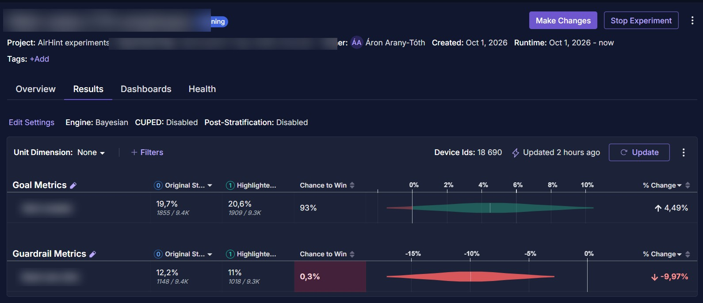

Case study
Growth at AirHint
AirHint predicts whether a flight price is going to rise or fall and tells you when to book. It is an early stage product with an engineering founder and no marketing function before I joined, so paid search, SEO, analytics, conversion and the CRM are all mine.
Revenue model
Revenue comes from Skyscanner affiliate links and display ads, so a visit only earns anything if it ends in a booking click. That makes traffic volume on its own close to meaningless, and it decides which searches are worth bidding on and which pages are worth fixing. It is the first job where I work backwards from what a visitor is actually worth, rather than against a campaign target someone else had already set.
Paid search
I plan and run the Google Ads search campaigns myself, managed against cost per booking click.
- Three languages: English, Spanish and Portuguese
- Budget, bidding, keywords and ad copy, all mine
- The only paid platform I have bought on directly. At Publicis I planned and monitored Meta and TikTok budgets, which is a different job
SEO
Organic search brings in most of the site's traffic, so a good share of my week goes on reading what already works and finding what is missing.
- Going through page content to see which queries a page could realistically answer
- Finding keywords with enough volume to justify building a page around them
- Checking in Search Console which of those pages earn clicks once they rank
I worked alongside the SEO team at Publicis before this, which is where I picked up most of the method. For the terms we target, AirHint currently comes out as the first result.
Traffic analysis
I am in Google Analytics and Search Console most days to answer one question: which traffic is worth having. A channel that sends plenty of sessions and no booking clicks is a cost rather than a win, so the work is breaking traffic down by source, country, device and landing page, and seeing which combinations end in someone clicking through to the airline.
The piece I am most pleased with is an analysis of the site's AI referral traffic, which had grown into a real channel while nobody was looking at it properly.
- The countries it arrives from barely overlap with the countries our Google traffic comes from, which makes it a second market rather than a transfer of the first.
- To work out why we get cited at all I read each major competitor's robots.txt by hand. Most of them block their flight pages with rules written years ago against scrapers, which happen to exclude the crawler that feeds ChatGPT. Expedia has opted in deliberately, so this is a window rather than a moat.
- Almost all of this traffic lands on a static price table and almost none of it reaches the prediction, which is what the product is actually for. That is where the next piece of work came from.
CRO and A/B testing
This started with a conversion analysis of the homepage, which is where nearly everyone arrives and where the product gets used. I went through it the way a first time visitor does, and it produced a list of recommendations.
- Live Messages while the prediction loads. A prediction takes a few seconds to come back, and an empty wait makes a product feel slower than it is, so the loading state now moves through short lines explaining what is being checked, which spends time the visitor was going to spend anyway.
- In production A trust bar on the homepage. The page asks people to act on a price forecast without giving them much reason to believe it, while the evidence, how the prediction is made and how often it has been right, sits on a separate page that almost nobody opens.
- In production A reworked deals page. The old flow collected one filter per page load, the new structure puts them on a single page with results already on screen. The piece I actually care about, a price carrying a reference point so that €41 reads as 38% below what the route normally costs, is not built yet.
Smaller changes get tested in GrowthBook: how a button is highlighted, how a panel is structured, where a call to action sits and how it is worded.

One of them, with the test and the metrics covered. The habit I have taken from running these is picking the guardrail metric before launch rather than after, because a variant can win on the number you set while moving the number you actually care about in the opposite direction.
CRM and email
I am building the CRM and the email lifecycle in Brevo from scratch, so that one-off visitors become captured and nurtured leads rather than a single affiliate click that never comes back. This is in progress and I am not claiming results from it yet.